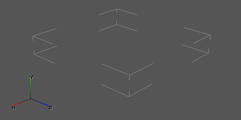

*.details
About
Detailed Objects on the level
Technical information
- Format version: 3
General structure - file blocks
It consists of three RIFF sections (blocks):
| Block ID | Size (bytes) | Description |
|---|---|---|
| 0x0 | 24 | headline |
| 0x1 | - | object models (in .dm format) |
| 0x2 | - | table of 2x2 meter cells, setting the density and species diversity of objects on the map |
Block order in version 3: 0x1, 0x2, 0x0
One cell (slot) is a parallelepiped.
The dimensions of all cells along the X and Z axes are the same and equal to 2 meters.
The height of the slot (the dimensions of the parallelepiped along the Y axis) in all the slots is individual.

slot in the Level Editor
Blocks
Block 0x0 (header)
| Type | Description |
|---|---|
| I | format version |
| I | number of dm models in the file |
| i | offset of the table cells along the X axis |
| i | offset of the table cells along the Z axis |
| I | the number of table cells on the X axis |
| I | the number of table cells on the Z axis |
Block 0x1 (meshes)
A block consists of nested blocks.
The nested block identifier is the mesh index of the detailed object.
Nested block data is a mesh in .dm format
Block 0x2 (slots/cell table)
The block stores cells (slots).
The slots in this block are written alternately.
Up to four meshes of detailed objects can be attached to each slot.
The mesh index of a detailed object can be in the range [0 … 62] (63 is no mesh).
One slot’s data is stored in 16 bytes (128 bits), which store the following:
| Size (in bits) | Description |
|---|---|
| 12 | Coordinate of the bottom edge of the slot on the Y axis (this value should be multiplied by 0.2 meters) |
| 8 | Height of the slot (this value should be multiplied by 0.1 meter) |
| 6 | Identifier of the first mesh of vegetation |
| 6 | Identifier of the second mesh of vegetation |
| 6 | Identifier of the third mesh of vegetation |
| 6 | Identifier of the fourth mesh of vegetation |
| 4 | Shade from the sun |
| 4 | Hemi lighting |
| 4 | Red component of static light sources |
| 4 | Green component of static light sources |
| 4 | Blue component of static light sources |
| 4 | Density of the first mesh in the left front corner of the slot |
| 4 | Density of the first mesh in the right front corner of the slot |
| 4 | Density of the first mesh in the left rear corner of the slot |
| 4 | Density of the first mesh in the right rear corner of the slot |
| 4 | Density of the second mesh in the left front corner of the slot |
| 4 | Density of the second mesh in the right front corner of the slot |
| 4 | Density of the second mesh in the left rear corner of the slot |
| 4 | Density of the second mesh in the right rear corner of the slot |
| 4 | Density of the third mesh in the left front corner of the slot |
| 4 | Density of the third mesh in the right front corner of the slot |
| 4 | Density of the third mesh in the left rear corner of the slot |
| 4 | Density of the third mesh in the right rear corner of the slot |
| 4 | Density of the fourth mesh in the left front corner of the slot |
| 4 | Density of the fourth mesh in the right front corner of the slot |
| 4 | Density of the fourth mesh in the left rear corner of the slot |
| 4 | Density of the fourth mesh in the right rear corner of the slot |
As you can see from the table, each slot has 16 density values.
Each of the four meshes has four density values (for the four corners of the slot).
The density values within a slot are interpolated from the density values of the slot corners.
Let us denote the densities as follows:
-
a0 - density for the left front corner of the slot
-
a1 - density for the right front corner of the slot
-
a2 - density for the left rear corner of the slot
-
a3 - density for the right rear corner of the slot
If you look at the slot from above, the densities will look like this:

Mesh density, slot view from above
Restrictions are imposed on the position of slots along the Y axis.
The lower limit is -200 meters.
And the allowed range: from -200 meters to 619 meters (0.2 * 4095 - 200).
The maximum height of the slot (parallelepiped) is: 25.5 (0.1 * 255).
The upper boundary of the slot is equal to: the lower boundary + the height of the slot.